Ανδρεαδάκης Αντώνης 2013030059
Αναθεωρημένη έκδοση (Νοέμβριος 2026): τα θέματα 2, 3, 4 και 5 ξαναγράφτηκαν μετά από διόρθωση του κώδικα και των υπολογισμών, στο θέμα 1 προστέθηκαν τα αποτελέσματα για όλες τις τιμές του Κ και προστέθηκε το θέμα 6.
Για το 1ο μέρος χρησιμοποιήθηκε η μέθοδος Principal Component Analysis σε ένα dataset έτσι, ώστε να γίνει εξοικείωση με τη μέθοδο αλλά και η χρήση του matlab για τέτοια προβλήματα. Πρώτα γίνεται εισαγωγή (μέσω της εντολής load) και απεικόνιση του dataset στον 2-D χώρο.
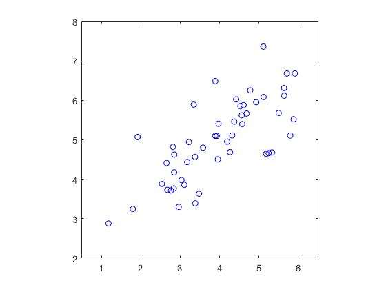
Στη συνέχεια, με κανονικοποίηση (standardization) με μέση τιμή μηδέν και διασπορά 1, στα αρχικά δείγματα παίρνουμε τη νέα κατανομή των δειγμάτων. Έπειτα εφαρμόζουμε τον αλγόριθμο PCA και υπολογίζεται ο πίνακας συνδιασποράς των κανονικοποιημένων δεδομένων με χρήση του τύπου Σ = 1m XTX. Τέλος, επιστρέφουμε τους πίνακες ιδιοτιμών και ιδιοδιανυσμάτων που υπολογίστηκαν με χρήση της εντολής eig() του matlab:
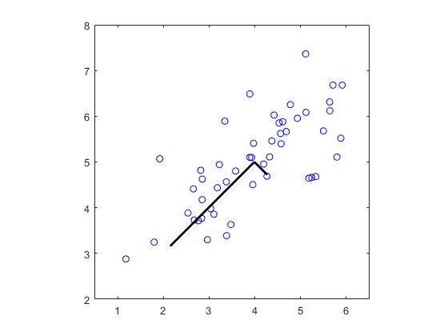
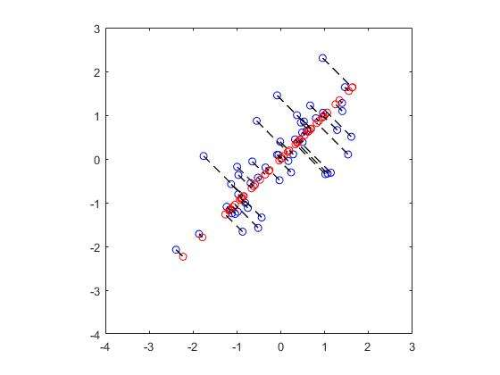
Έτσι, υπολογίζεται η συνεισφορά της κάθε συνιστώσας στην ολική διακύμανση και με προβολή και ανάκτηση των δειγμάτων, λαμβάνουμε το νέο αποτέλεσμα σε μικρότερη διάσταση. Η πρώτη κύρια συνιστώσα είναι η u1 = [−0,7071 −0,7071]T και εξηγεί το 86,78% της συνολικής διακύμανσης, ενώ η δεύτερη το υπόλοιπο 13,22%. Το πρώτο δείγμα προβάλλεται στην τιμή z = 1,4813 και ανακτάται ως το σημείο (−1,0474, −1,0474), τιμές που συμφωνούν με τις αναμενόμενες του script.
Για το 2ο μέρος εφαρμόστηκε ο αλγόριθμος PCA σε ένα πραγματικό dataset με εικόνες προσώπων. Αρχικά, κάνοντας εισαγωγή και προβολή των εικόνων χρησιμοποιήσαμε τις συναρτήσεις feature_normalize κι έπειτα myPCA.
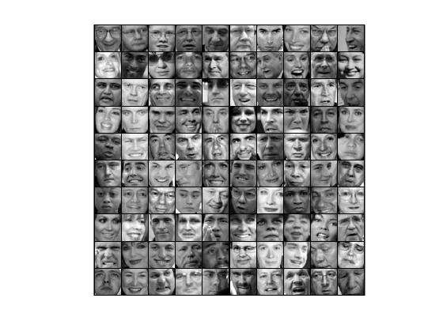
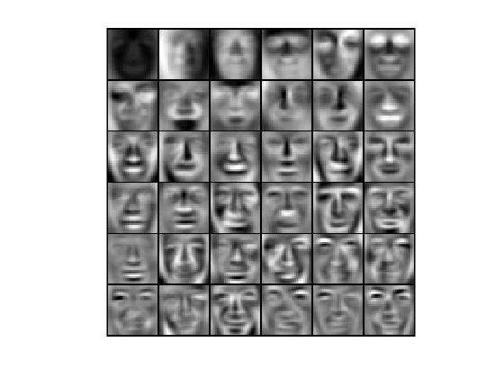
Οι πρώτες κύριες συνιστώσες μοιάζουν με θολά πρόσωπα: αποτυπώνουν τα γενικά χαρακτηριστικά που αλλάζουν περισσότερο από εικόνα σε εικόνα (φωτισμός, περίγραμμα προσώπου, θέση ματιών και στόματος), ενώ οι επόμενες περιγράφουν όλο και πιο λεπτές λεπτομέρειες.
Στη συνέχεια μειώνουμε τη διάσταση των δειγμάτων από 1024 σε Κ με την projectData και τα προβάλλουμε ξανά στον αρχικό χώρο με τη recoverData. Από την απεικόνιση των δειγμάτων, παρατηρείται σημαντική απώλεια πληροφορίας, δηλαδή μια θόλωση. Η διαδικασία έγινε για Κ = 100 και επαναλήφθηκε για Κ = 10, 50 και 200:
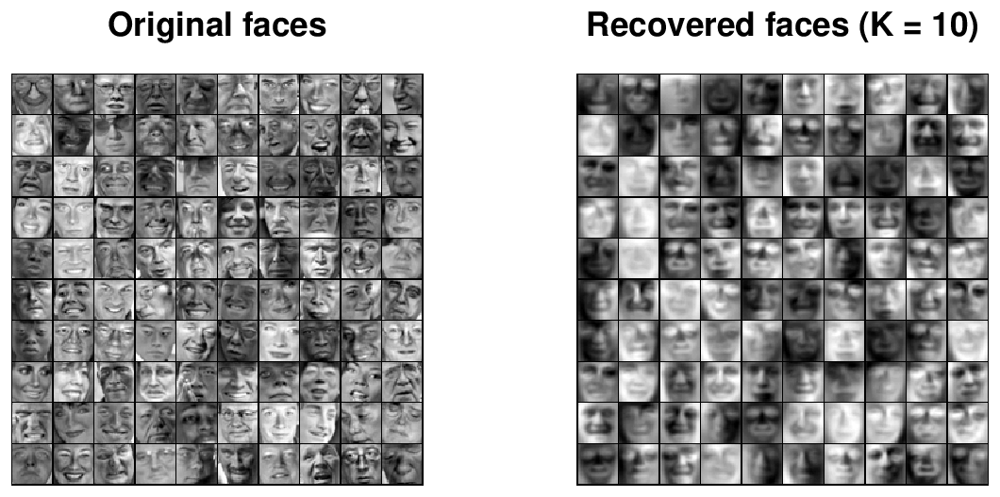
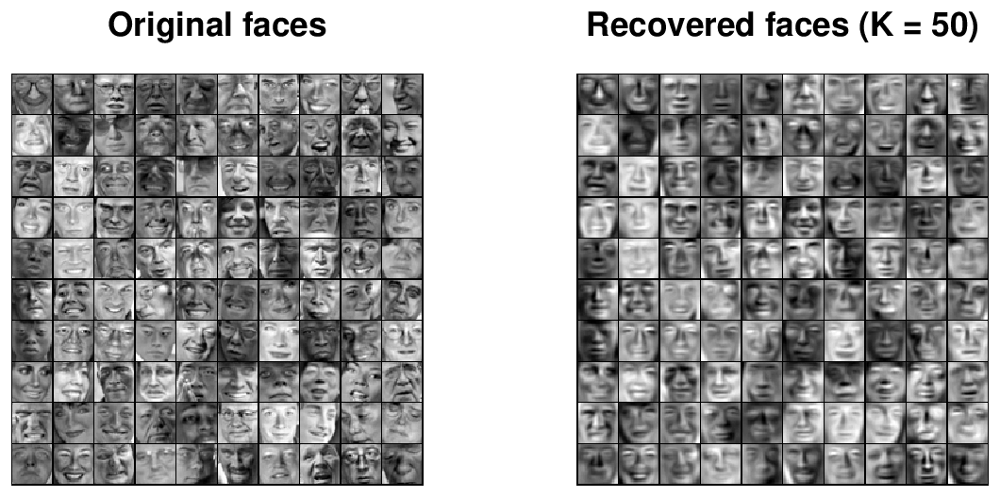
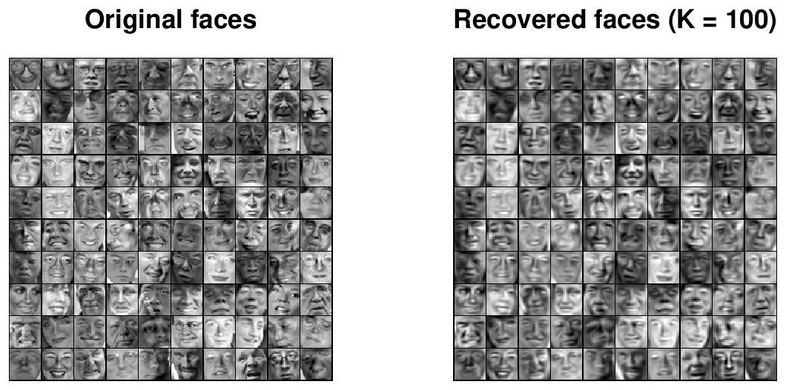
Για να γίνει ορατή η μείωση των διαστάσεων, οι εικόνες προβάλλονται στον ίδιο χώρο με χρήση 10, 50, 100 και 200 ιδιοδιανυσμάτων. Παρατηρούμε λοιπόν, ότι όσο αυξάνεται ο αριθμός των συνιστωσών τόσο πιο ξεκάθαρο είναι το αποτέλεσμα οπτικά. Δηλαδή, όσο η παράμετρος Κ αυξάνεται τόσο καλύτερη είναι η ανάκτηση των εικόνων, όπως φαίνεται και στις παραπάνω εικόνες. Αυτό φαίνεται και από το ποσοστό της συνολικής διακύμανσης που διατηρούν οι Κ πρώτες συνιστώσες:
| Κ | 10 | 50 | 100 | 200 |
|---|---|---|---|---|
| Διακύμανση που διατηρείται | 67,27% | 86,79% | 93,19% | 97,31% |
Με Κ = 10 διακρίνεται μόνο το γενικό σχήμα και ο φωτισμός κάθε προσώπου, ενώ με Κ = 200 οι ανακτημένες εικόνες σχεδόν δεν ξεχωρίζουν από τις αρχικές, παρότι χρησιμοποιούμε λιγότερο από το ένα πέμπτο των αρχικών διαστάσεων.
Από τα δεδομένα της άσκησης έχουμε:
| −5 |
| 5 |
| 10 |
| 15 |
| 11 | 9 |
| 9 | 11 |
| 2 | 0 |
| 0 | 2 |
Οπότε
| −5 |
| 5 |
| 10 |
| 15 |
| −15 |
| −10 |
Οι δύο κατηγορίες είναι ισοπίθανες, άρα γνωρίζουμε ότι Sw = 12 (Σ1 + Σ2), δηλαδή
| 13 | 9 |
| 9 | 13 |
| 132 | 92 |
| 92 | 132 |
Η ορίζουσα του Sw είναι
Σύμφωνα με την υπόδειξη, ο αντίστροφος του Sw θα είναι:
| 132 | −92 |
| −92 | 132 |
| 13 | −9 |
| −9 | 13 |
Άρα το διάνυσμα προβολής είναι
| 13 | −9 |
| −9 | 13 |
| −15 |
| −10 |
| 13·(−15) + (−9)·(−10) |
| (−9)·(−15) + 13·(−10) |
| −195 + 90 |
| 135 − 130 |
| −105 |
| 5 |
| −2,3864 |
| 0,1136 |
Η κατεύθυνση του w είναι αυτή του διανύσματος [−21 1]T, δηλαδή σχεδόν παράλληλη με τον οριζόντιο άξονα. Παρότι η διαφορά των μέσων τιμών έχει μεγάλη συνιστώσα και στους δύο άξονες, η κλάση ω1 έχει μεγάλη διασπορά κατά μήκος της διαγωνίου (ισχυρή θετική συσχέτιση των δύο χαρακτηριστικών), οπότε ο πολλαπλασιασμός με τον Sw−1 στρέφει την προβολή μακριά από τη διεύθυνση αυτή.
Υλοποίησα και σε matlab την άσκηση και έδωσε το ίδιο αποτέλεσμα: w = [−2.3864 0.1136]T. Κώδικας:
clc; clear all; close all; m1 = [-5; 5]; m2 = [10; 15]; d = m1 - m2; S1 = [11 9; 9 11]; S2 = [2 0; 0 2]; Sw = (1/2)*(S1 + S2); w = (inv(Sw))*d;
Για το 1ο μέρος εφαρμόσαμε τον αλγόριθμο LDA σε ένα σύνολο από τεχνητά δεδομένα και απεικονίζονται παρακάτω:
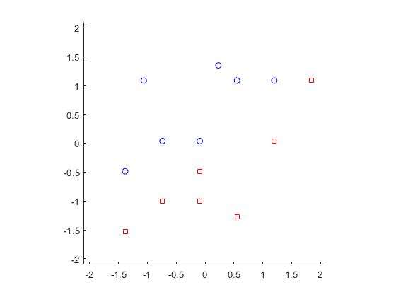
Μετά, εφαρμόσαμε τον αλγόριθμο του fisher Linear Discriminant, με σκοπό τη μείωση των διαστάσεων και την εύκολη διάκρισή τους σε 2 κατηγορίες. Αφού αφαιρέσουμε από τα δείγματα κάθε κλάσης τη μέση τιμή της, υπολογίζουμε τους πίνακες σκέδασης S1 και S2, τον Sw = S1 + S2 και το διάνυσμα προβολής v = Sw−1(μ1 − μ2), το οποίο κανονικοποιούμε ώστε να έχει μοναδιαίο μέτρο. Για τα δεδομένα μας προκύπτει v = [−0,5602 0,8284]. Όπως και στην 1η άσκηση, στο διάνυσμα που βρέθηκε από τον αλγόριθμο προβάλλουμε και ανακτούμε τα δεδομένα πάνω σε αυτό το διάνυσμα. Την ίδια διαδικασία ακολουθούμε και με τη μέθοδο PCA, όπου η πρώτη κύρια συνιστώσα είναι η u1 = [−0,7071 −0,7071] και εξηγεί το 73,25% της διακύμανσης.
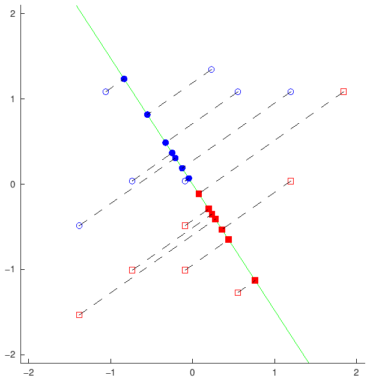
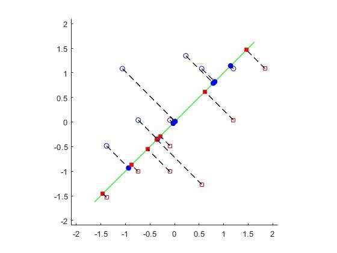
Με τη χρήση του LDA, η διάκριση των δεδομένων στη μειωμένη διάσταση είναι πιο «εύκολη». Οι προβολές της πρώτης κλάσης βρίσκονται στο διάστημα [0,083, 1,492] και της δεύτερης στο [−1,363, −0,135], δηλαδή οι δύο κλάσεις δεν επικαλύπτονται καθόλου πάνω στην ευθεία και χωρίζονται με ένα απλό κατώφλι. Αντιθέτως, με χρήση του PCA η διάκριση δεν είναι δυνατή, παρότι μειώνεται η διάσταση: οι προβολές της πρώτης κλάσης πέφτουν στο [−1,614, 1,322] και της δεύτερης στο [−2,071, 2,062], άρα τα δείγματα των δύο κλάσεων ανακατεύονται.
Ο λόγος είναι ότι ο PCA δεν χρησιμοποιεί τις ετικέτες των κλάσεων και επιλέγει την κατεύθυνση με τη μεγαλύτερη συνολική διακύμανση, η οποία εδώ σχηματίζει γωνία περίπου 79° με την κατεύθυνση του LDA, δηλαδή είναι σχεδόν κάθετη στην κατεύθυνση που χωρίζει τις κλάσεις. Ο LDA, αντίθετα, μεγιστοποιεί το κριτήριο του Fisher
δηλαδή την απόσταση των προβολών των μέσων τιμών σε σχέση με τη διασπορά μέσα σε κάθε κλάση. Το κριτήριο παίρνει την τιμή 0,6061 για την κατεύθυνση του LDA και μόλις 0,0192 για την κατεύθυνση του PCA.
Στο 2ο μέρος εφαρμόσαμε multiclass LDA πάνω στο IRIS dataset, το οποίο περιλαμβάνει 50 δείγματα από 3 διαφορετικά είδη λουλουδιών. Σκοπός είναι η μείωση των διαστάσεων, όπως παραπάνω. Εισάγουμε και προβάλλουμε τα δείγματα από τις 3 κλάσεις και εφαρμόζουμε τον αλγόριθμο LDA. Έτσι έχουμε:
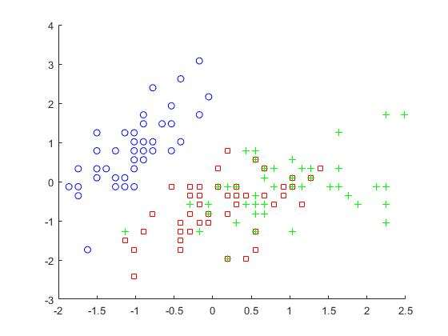
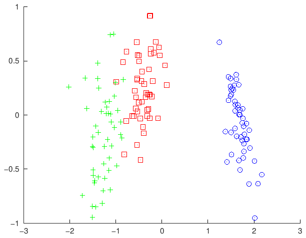
Η συνάρτηση myLDA υπολογίζει από τα δεδομένα τις prior πιθανότητες Pi (εδώ 1/3 για κάθε κλάση), τις μέσες τιμές μi των κλάσεων, τον ολικό μέσο μ0 = Σi Pi μi, τον πίνακα Sw = Σi Pi Σi και τον πίνακα Sb = Σi Pi (μi − μ0)(μi − μ0)T. Έπειτα υπολογίζει τις ιδιοτιμές και τα ιδιοδιανύσματα του Sw−1Sb, τα ταξινομεί με φθίνουσα σειρά ιδιοτιμής και κρατά τα NewDim = 2 πρώτα. Οι ιδιοτιμές που προκύπτουν είναι 32,19 και 0,285 (οι άλλες δύο είναι μηδενικές, αφού με 3 κλάσεις ο Sb έχει βαθμό το πολύ 2), άρα σχεδόν όλη η διαχωριστική πληροφορία (99,1%) βρίσκεται στο πρώτο διάνυσμα προβολής.
Στα δύο πρώτα χαρακτηριστικά η διάκριση των κλάσεων δεν είναι εύκολη, αφού τα δείγματα των versicolor και virginica είναι ανακατεμένα. Με εφαρμογή του αλγορίθμου LDA, οι 3 κλάσεις γίνονται εύκολα διακριτές. Στον πρώτο άξονα η setosa (τιμές από 1,25 έως 2,17) απέχει πολύ από τις άλλες δύο, ενώ η versicolor (από −0,99 έως 0,10) και η virginica (από −2,02 έως −0,84) σχηματίζουν δύο ξεχωριστές ομάδες με μια μικρή μόνο επικάλυψη στο όριό τους. Ο δεύτερος άξονας συνεισφέρει ελάχιστα στον διαχωρισμό, όπως δείχνει και η μικρή ιδιοτιμή του.
Σκοπός της άσκησης είναι η δημιουργία ενός δειγματοχώρου και ο υπολογισμός κάποιων πιθανοτήτων με χρήση του θεωρήματος Bayes. Υπολογίσαμε το aspect ratio κάθε εικόνας, το οποίο ορίζεται από το ελάχιστο ορθογώνιο που περικλείει έναν χειρόγραφο αριθμό στο mnist dataset. Δηλαδή ο λόγος width/height. Για να βρούμε το ορθογώνιο εντοπίζουμε την πρώτη και την τελευταία γραμμή, καθώς και την πρώτη και την τελευταία στήλη της εικόνας που περιέχουν μη μηδενικά pixel. Το ύψος και το πλάτος είναι το πλήθος των γραμμών και των στηλών που καλύπτει το ψηφίο (τελευταία − πρώτη + 1). Για το σύνολο των 60.000 εικόνων η ελάχιστη τιμή του aspect ratio είναι 0,1 και η μέγιστη 2,2222.
Συγκεκριμένα έγινε επεξεργασία μόνο των ψηφίων 1 και 2 για την κλάση 1 και 2 αντίστοιχα. Μετά τον υπολογισμό του aspect ratio αυτών των κλάσεων, δημιουργήσαμε ένα διάστημα τιμών με εύρος [minAspectRatio, maxAspectRatio] και από τις 2 κλάσεις, το οποίο είναι το [0,1, 2,2222] (οι ακραίες τιμές όλου του dataset ανήκουν σε εικόνες αυτών των δύο κλάσεων). Στη συνέχεια, χωρίσαμε αυτό το διάστημα σε 3 ίσα υποδιαστήματα, Low = [0,1, 0,8074), Medium = [0,8074, 1,5148) και High = [1,5148, 2,2222], και έγινε ταξινόμηση κάθε εικόνας σε καθένα από αυτά, ανάλογα το aspect ratio της κάθε εικόνας. Τα αποτελέσματα που πήραμε από τις γραφικές παραστάσεις φαίνονται παρακάτω:
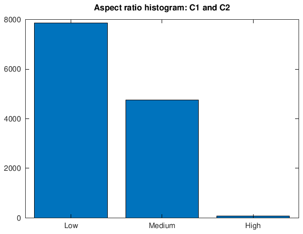
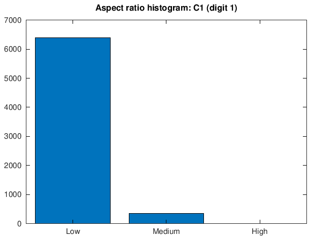
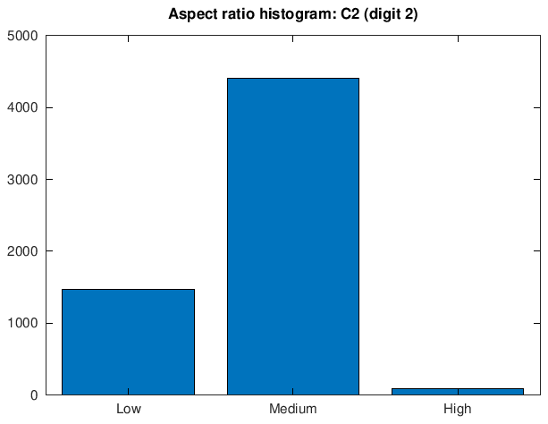
| Low | Medium | High | Σύνολο | |
|---|---|---|---|---|
| C1 (ψηφίο 1) | 6393 | 349 | 0 | 6742 |
| C2 (ψηφίο 2) | 1473 | 4402 | 83 | 5958 |
| C1 και C2 | 7866 | 4751 | 83 | 12700 |
Οι πιθανότητες που υπολογίσαμε είναι οι εξής:
Prior Probabilities. Είναι το ποσοστό των εικόνων κάθε κλάσης: P(C1) = 6742/12700 = 0,5309 και P(C2) = 5958/12700 = 0,4691.
Likelihoods. Είναι το ποσοστό των εικόνων της κάθε κλάσης που πέφτει σε κάθε υποδιάστημα, π.χ. P(L|C1) = 6393/6742:
| X = L | X = M | X = H | |
|---|---|---|---|
| P(X|C1) | 0,9482 | 0,0518 | 0,0000 |
| P(X|C2) | 0,2472 | 0,7388 | 0,0139 |
| P(X) (evidence) | 0,6194 | 0,3741 | 0,0065 |
Evidence. Προκύπτει από το θεώρημα ολικής πιθανότητας, P(X) = P(X|C1)P(C1) + P(X|C2)P(C2), που ισούται με το ποσοστό όλων των εικόνων των δύο κλάσεων σε κάθε υποδιάστημα, π.χ. P(L) = 7866/12700 = 0,6194. Οι τιμές φαίνονται στην τελευταία γραμμή του πίνακα.
Posterior Probabilities. Για μια νέα εικόνα με χαμηλό λόγο όψεως (X = L), από τον κανόνα του Bayes έχουμε:
Οι δύο εκ των υστέρων πιθανότητες έχουν άθροισμα 1, όπως πρέπει. Το αποτέλεσμα είναι αναμενόμενο: το ψηφίο 1 είναι στενό και ψηλό, οπότε σχεδόν όλες οι εικόνες του (94,8%) έχουν χαμηλό aspect ratio, ενώ το ψηφίο 2 είναι πιο πλατύ και οι περισσότερες εικόνες του (73,9%) ανήκουν στο μεσαίο υποδιάστημα. Έτσι, μια εικόνα με χαμηλό λόγο όψεως ταξινομείται στην κλάση C1 με πιθανότητα 81,27%.
Για κανονικές κατανομές χρησιμοποιούμε τις συναρτήσεις διάκρισης
και το σύνορο απόφασης είναι τα σημεία x = [x1 x2]T για τα οποία g1(x) = g2(x). Για τους πίνακες της άσκησης έχουμε |Σ1| = |Σ2| = 1,22 − 0,42 = 1,28 και
| 1,2 | 0,4 |
| 0,4 | 1,2 |
| 0,9375 | 0,3125 |
| 0,3125 | 0,9375 |
| 0,9375 | −0,3125 |
| −0,3125 | 0,9375 |
Οι όροι με τις ορίζουσες είναι ίσοι και απλοποιούνται, οπότε η συνθήκη g1(x) = g2(x) γράφεται
Οι δύο τετραγωνικές μορφές είναι
Στη διαφορά τους οι όροι x12 και x22 απαλείφονται, επειδή οι δύο αντίστροφοι πίνακες έχουν την ίδια διαγώνιο, ενώ απαλείφονται και οι γραμμικοί όροι. Μένει μόνο ο όρος x1x2 και μια σταθερά: η διαφορά ισούται με 22,5 − 1,25 x1x2. Επομένως το σύνορο απόφασης είναι
Ένα δείγμα ταξινομείται στην ω1 όταν το γινόμενο x1x2 είναι μικρότερο από το δεξί μέλος και στην ω2 όταν είναι μεγαλύτερο.
Η γραφική που φαίνεται παρακάτω απαντά στα ερωτήματα b και c της άσκησης. Με κόκκινο σχεδιάζονται οι ισοϋψείς της p(x|ω1), με μπλε της p(x|ω2) και με τα υπόλοιπα χρώματα τα σύνορα απόφασης για τις πέντε τιμές της P(ω1).
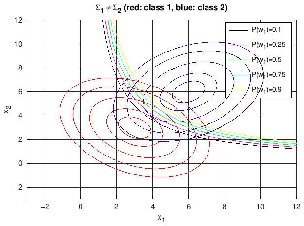
Το σύνορο απόφασης είναι υπερβολή της μορφής x1x2 = c, με ασύμπτωτες τους δύο άξονες. Αυτό συμβαίνει επειδή οι πίνακες συνδιασποράς είναι διαφορετικοί, οπότε οι τετραγωνικοί όροι των g1 και g2 δεν απαλείφονται πλήρως και το σύνορο είναι καμπύλη δευτέρου βαθμού. Στη συγκεκριμένη περίπτωση οι δύο πίνακες διαφέρουν μόνο στο πρόσημο της συσχέτισης, γι' αυτό επιζεί μόνο ο όρος x1x2. Στην περιοχή των δεδομένων φαίνεται ο κλάδος του πρώτου τεταρτημορίου. Ο δεύτερος κλάδος βρίσκεται στο τρίτο τεταρτημόριο, μακριά από τις δύο κατανομές, και η ω1 επιλέγεται ανάμεσα στους δύο κλάδους.
Η εκ των προτέρων πιθανότητα δεν αλλάζει τη μορφή του συνόρου αλλά μόνο τη σταθερά c, η οποία παίρνει τις παρακάτω τιμές. Όσο αυξάνεται η P(ω1), η υπερβολή απομακρύνεται από το μ1 και πλησιάζει το μ2, δηλαδή μεγαλώνει η περιοχή απόφασης της πιο πιθανής κλάσης σε βάρος της άλλης. Για P(ω1) = P(ω2) = 0,5 ο λογάριθμος μηδενίζεται και το σύνορο εξαρτάται μόνο από τις πιθανοφάνειες.
| P(ω1) | 0,1 | 0,25 | 0,5 | 0,75 | 0,9 |
|---|---|---|---|---|---|
| Σ1 ≠ Σ2: x1x2 = c | 14,484 | 16,242 | 18 | 19,758 | 21,516 |
| Σ1 = Σ2: x1 + x2 = c | 7,828 | 8,414 | 9 | 9,586 | 10,172 |
Όταν Σ1 = Σ2 = Σ, ο τετραγωνικός όρος xTΣ−1x είναι κοινός στις g1 και g2 και απαλείφεται. Το σύνορο g1(x) = g2(x) γίνεται γραμμικό, wTx + w0 = 0, με
| 0,9375 | −0,3125 |
| −0,3125 | 0,9375 |
| −3 |
| −3 |
| −1,875 |
| −1,875 |
Άρα το σύνορο απόφασης είναι η ευθεία
και το δείγμα ταξινομείται στην ω1 όταν το άθροισμα x1 + x2 είναι μικρότερο από το δεξί μέλος. Η γραφική παράσταση για αυτή την περίπτωση είναι η παρακάτω (τώρα και οι δύο κλάσεις έχουν ισοϋψείς με τον ίδιο προσανατολισμό):
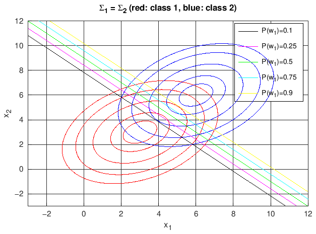
Το σύνορο απόφασης είναι πλέον ευθεία με κλίση −1, κάθετη στο διάνυσμα w. Εδώ το w έχει την ίδια διεύθυνση με το μ1 − μ2, επειδή η διαφορά των μέσων τιμών είναι ιδιοδιάνυσμα του Σ. Για ίσες εκ των προτέρων πιθανότητες η ευθεία x1 + x2 = 9 περνά από το μέσο (4,5, 4,5) του τμήματος που ενώνει τις δύο μέσες τιμές. Όταν αλλάζει η P(ω1), η ευθεία μετατοπίζεται παράλληλα προς τον εαυτό της: για P(ω1) > 0,5 πλησιάζει το μ2 και για P(ω1) < 0,5 το μ1, δηλαδή και πάλι μεγαλώνει η περιοχή της πιο πιθανής κλάσης. Οι τιμές της σταθεράς φαίνονται στη δεύτερη γραμμή του προηγούμενου πίνακα.
Συμβολίζουμε με λki το στοιχείο (k, i) του πίνακα ρίσκου L, δηλαδή το κόστος όταν ένα δείγμα της κλάσης ωk ταξινομείται στην κλάση ωi. Έτσι λ11 = λ22 = 0, λ12 = 0,5 και λ21 = 1. Αν R1 και R2 είναι οι περιοχές στις οποίες αποφασίζουμε ω1 και ω2 αντίστοιχα, το μέσο ρίσκο είναι
και ελαχιστοποιείται όταν κάθε x ανατίθεται στην κλάση με το μικρότερο κόστος, δηλαδή όταν αποφασίζουμε ω1 αν
αφού P(ω1) = P(ω2). Για σ1 = 1 και σ2 = 2 οι πυκνότητες Rayleigh για x ≥ 0 είναι p(x|ω1) = x e−x²/2 και p(x|ω2) = x4 e−x²/8, οπότε ο λόγος πιθανοφάνειας είναι
Ο λόγος αυτός είναι φθίνουσα συνάρτηση του x, άρα αποφασίζουμε ω1 για x < x0 και ω2 για x > x0, όπου το όριο απόφασης x0 προκύπτει από την ισότητα:
Με το όριο αυτό το ρίσκο υπολογίζεται από τις συναρτήσεις κατανομής Rayleigh, Fi(x) = 1 − e−x²/(2σi²):
Το αποτέλεσμα επαληθεύτηκε και αριθμητικά: ελαχιστοποιώντας το r(x0) ως προς x0 (με αριθμητική ολοκλήρωση των δύο πυκνοτήτων) το ελάχιστο βρέθηκε στο x0 = 1,3596 με τιμή 0,2024.
Για σύγκριση, το όριο που ελαχιστοποιεί την πιθανότητα σφάλματος (ίσα κόστη) είναι x0 = √(16 ln 2 / 3) ≈ 1,9227. Επειδή η λανθασμένη ταξινόμηση ενός δείγματος της ω2 κοστίζει τα διπλάσια από το αντίστροφο λάθος, το όριο μετακινείται προς τα αριστερά, ώστε να μικρύνει η περιοχή R1 και να γίνονται λιγότερα από τα «ακριβά» λάθη.